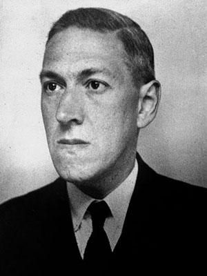

HOWARD PHILLIPS LOVECRAFT (Providence, Estados Unidos, 20 de agosto de 1890 - ibídem, 15 de marzo de 1937) fue un escritor estadounidense, autor de novelas y relatos de terror y ciencia ficción. Se lo considera un gran innovador del cuento de terror, al que aportó una mitología propia (Los mitos de Cthulhu), desarrollada en colaboración con otros autores y aún vigente. Su obra constituye un clásico del terror cósmico materialista, una corriente que se aparta de la temática tradicional del terror sobrenatural (satanismo, fantasmas), incorporando elementos de ciencia ficción (razas alienígenas, viajes en el tiempo, existencia de otras dimensiones). Cultivó también la poesía, el ensayo y la literatura epistolar.